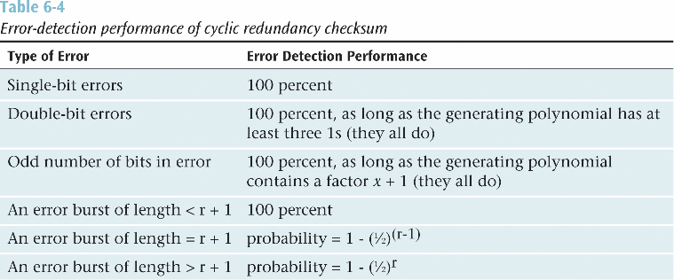
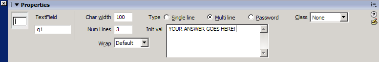

400 points
(50) 1. Why are CRC calculations done in hardware instead of software? Note: do not only rely on the book for the answer. Explain your answer.
page 190 (p198 in 5e)
(25) 1. What is white noise and how does it affect a signal?
(25) 7. Will proper shielding of a medium increase or decrease the chance of errors? Explain your reasoning.
(25) 15. What type of errors will cyclic checksum not detect?
(25) 20. In communication systems, what does timeout mean?
page 191
(25) 6. Given the character 1010010 what bit will be added to support odd parity?
(25) 7. Generate the parity bits and longitudanal parity bits for even parity for the characters:
(75) 25. The 12-bit string 010111110010 with embedded Hamming code bits (c8, c4, c2, c1) has just arrived. Is there an error? If so, which bit is in error? Use the following table to solve this problem. Reference pages 193, 194
Is there an error? If so, where?
page 192
(75) 2. Your boss has heard a lot about cyclic redundancy checksum (CRC) but is not convinced that it is much better than simple parity. You quote some of the numbers and probabilities of error detection, but they mean little to him. If you could give a more concrete example of how good cyclic redundancy checksum is, you might win the boss over. Reference the probabilities in Table 6-4. 

If your company transmits a continuous stream at 128,000 bits per second, how much time will pass before CRC lets an error slip through? Assume an error rate of one frame in 10,000 Assume a frame consists of 1,000 bits Explain your reasoning, and show your calculations.
(50) 7. Are there any CRC generating polynomials other than those listed in this chapter?
Important: Assignments can have two parts. 1. Form Part The form part has blue background for your personal information, or dark blue text for questions . The form part is answered by placing your answer in the 'Init val' field as shown below. Do not delete any of the TextField boxes! This method will keep your answer in your .html file when you publish / ftp your homework to your studentwebsite. Never change the Name field (q1, q2...)!

2. Normal Html Part The normal html sections will have black text. You can type your answers into the table provided. When you have completed this HW assignment publish (ftp) it to your studentwebs site. Make sure to activate the hyperlink for this assignment on your HW template file. Use a web browser to make sure you can view the completed assignment with your answers and make sure that any graphics files are visible and correctly linked. Correct any problems that you find.
When you are satisfied that your assignment has been done correctly fill in the form fields for First Name, Last Name, PIN, Semester, Class, Section and Assignment. Remember to choose a PIN number at the start of the semester. You will use this PIN number to verify that your homework was indeed submitted.
Once this is done, press the submit button. This sends a copy of your assignment answers to the professor. If all goes well, you will see a confirmation page. At this point your homework has been submitted. Before this, you have not completed your assignment.